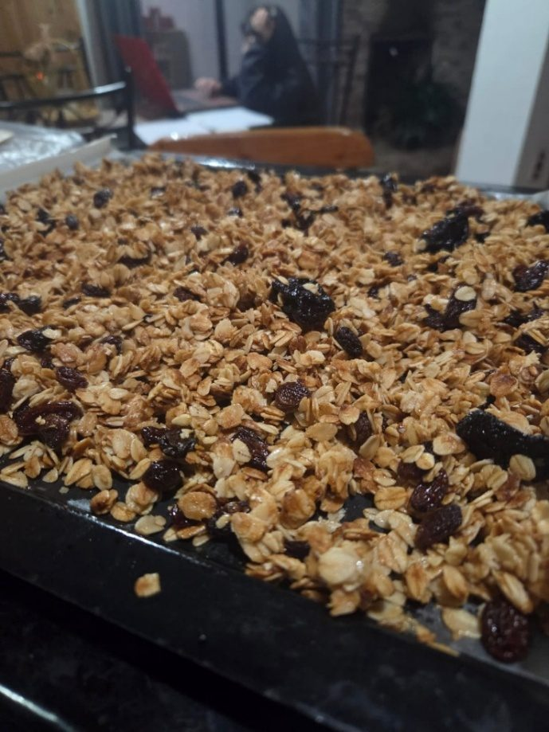
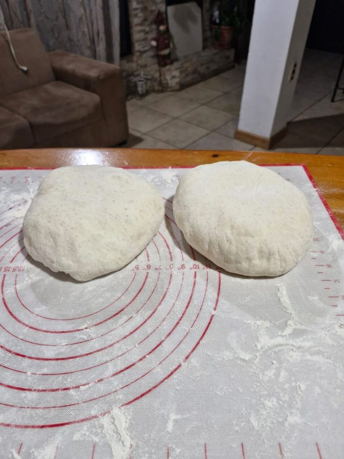

Elaboramos pan de masa madre y granola artesanal con ingredientes naturales y procesos responsables,
pensados para nutrir tu cuerpo y tu bienestar. Cada hogaza cuenta una historia de dedicación, salud y comunidad.
Eunoia Natural es un emprendimiento dedicado a la elaboración y comercialización de
pan de masa madre y granola artesanal, hechos con ingredientes naturales
y procesos responsables.
Nuestro origen
Nacimos con el propósito de ofrecer alternativas saludables a las personas, mediante una alimentación más
equilibrada y natural. Cada vez más gente busca productos nutritivos, hechos con ingredientes de calidad y con
menos procesamiento industrial, y quisimos responder a esa necesidad con alimentos artesanales y cercanos.
Hoy damos nuestros primeros pasos: producimos desde nuestros hogares, participamos en ferias de emprendedores
y atendemos cada pedido de forma directa, acompañando cada venta con información sobre los ingredientes y la
mejor manera de disfrutarlos.
Pensamos especialmente en personas en tratamiento oncológico y en quienes quieren alimentarse de forma
más consciente. Nuestros productos son alimentos complementarios: no sustituyen la indicación médica o
nutricional, y recomendamos consultar con el equipo tratante.


Misión
Somos una empresa dedicada a la elaboración de productos artesanales saludables, tales como pan de masa madre y granola artesanal, con ingredientes naturales y procesos responsables; con el objetivo de promover nutrición y bienestar a personas con tratamiento oncológico o aquellas que desean una alimentación sana, además de brindar un servicio orientado al consumo ideal del producto.
Visión
Ser la opción de alimentos artesanales saludables a nivel regional, contribuyendo al bienestar de personas con tratamientos oncológicos y a aquellas que desean alimentarse de manera consciente.
Nuestros valores
Responsabilidad
Innovación
Honestidad
Sostenibilidad
Humanidad
Nuestra propuesta de valor
Elaboración artesanal
Pan de masa madre y granola hechos de forma artesanal: una alternativa diferente a los productos industrializados.
Ingredientes seleccionados
Materias primas naturales y cuidadosamente elegidas, con control de calidad e higiene en cada etapa.
Información y cercanía
Te contamos qué contiene cada producto y cómo aprovecharlo, con atención directa por redes sociales y pedidos personalizados.
El equipo
JJeisel Navarro RoblesProducción
AAstrid Robles BrenesComercialización
JJoshua Romero ValverdeAdministración y Finanzas
Menú artesanal
Lo que horneamos para ti
Precios en colones costarricenses. Haz tu pedido por WhatsApp o Instagram y coordinamos la entrega.
Siempre disponibles
Pan de Masa Madre
1000 g
Fermentación natural, corteza crujiente y corazón suave. Se elabora con harina, harina integral, agua, sal y masa madre.